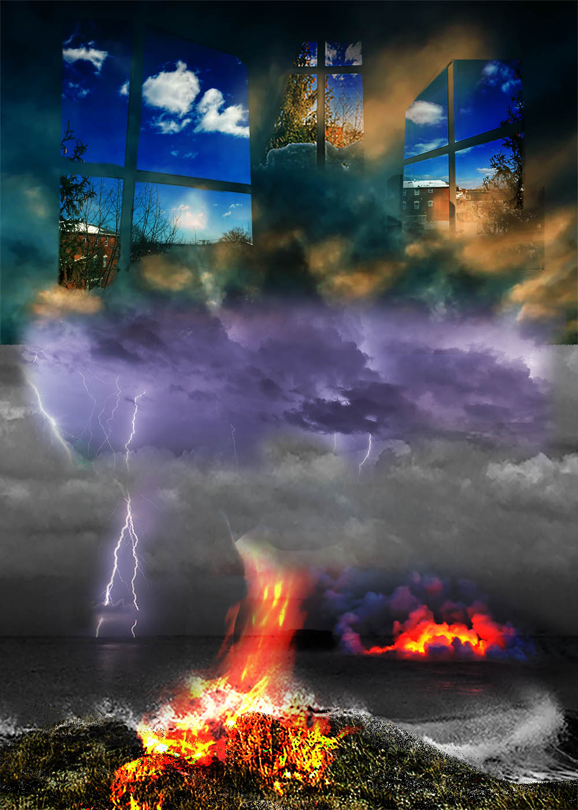
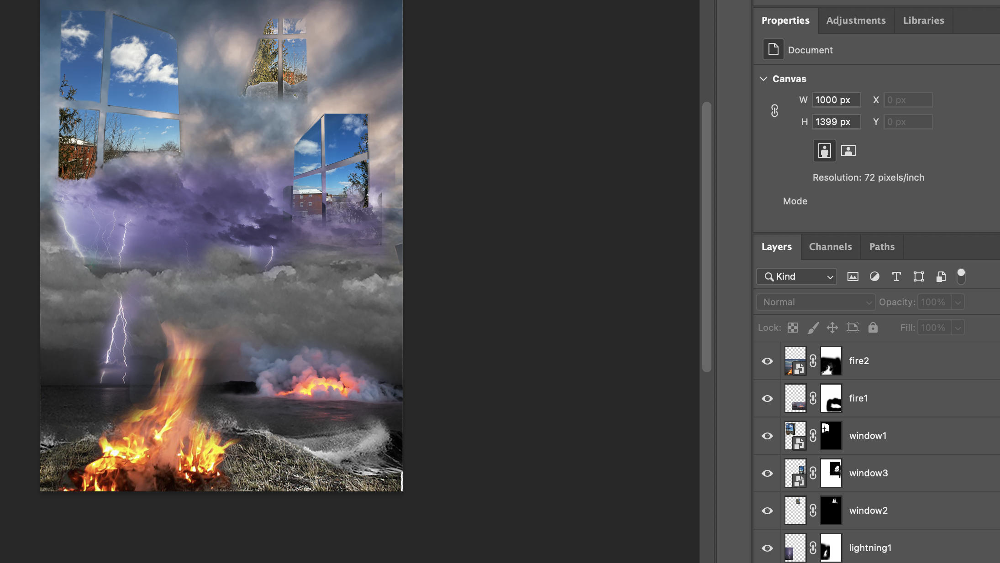

I decided to make a photomontage of natural disruptions juxtaposed with once-idyllic pictures of window-scenery. I used various layering techniques to collage a fictional portrait of the sky when faced with global warming, habitat destruction, and rising sea levels. First, I masked a picture of the clouded sky to layer on top of a picture of the stormy seas. Then, to add to the chaos of the world (as we feel through images on social media), I layered on lightning storms and spontaneous fires. Lastly, I experimented with different Blend Modes like "Harsh Light" and "Color Dodge" until I got a mix that captured the dark chaos of climate change reflected through the windows that we see the world through (both our literal windows and social media).
The photos of the natural disruptions were all sourced from a mix of the Flickr Creative Commons and Public Domain Image Archive. Meanwhile, the photos of the window-scenery were taken from my own home using an iPhone.

